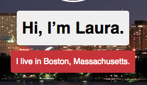
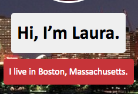
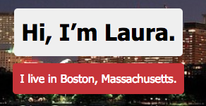
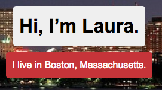
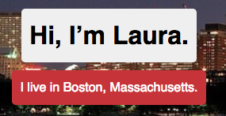

Team Treehouse Techdegree Project #1
I've recently started Team Treehouse's Techdegree program, which involves making a bunch of cool projects to practice the coding skills I've learned. Making this site is my first project!
Project 1: Build Your Own Profile Page
Skills Used: HTML, CSS
How did I build it?
Because I've been a Team Treehouse member for a little while, I'd already completed the introductory HTML tutorials, but those must be completed prior to beginning the project. Then, I read the project guidelines and downloaded the "starter" files - for this project, you aren't expected to code the entire profile page from scratch, but rather to modify existing code to personalize the page and make it your own.
Before starting, I downloaded Atom, a free text editor (prevously I've used Sublime Text, and at the coding school we use Caret, but I figured that for the purposes of following along, it made sense to download Treehouse's preferred text editor, and it did have some cool packages to easily download). After installing Atom, I watched a few tutorial videos to help me install and get acquainted with Github, a website where you can store and publish your code. Then, I was ready to get started on the project itself.
The project guidelines first asked me to choose a profile image and site background image, and then resize them so that they don't take up too much space.
After choosing my images and plugging them into the existing code, I:
- Added "alt" text for my profile image
- Personalized the content on the homepage to reflect my own background and coding interests
- Created two new pages to represent my professional experience and create a record of the projects I complete (to help me put my ideas into words, and also to look back at to see how far I've come...eventually!)
- Making sure the links in my page all worked, and correctly linked to other parts of the page or outside sites
- Customizing the CSS to fit a color scheme and layout that I like
What did I learn?
This was a little bit of a challenge, because instead of creating all of the code from square 1, I had to edit existing code. This meant that there were elements of the code I couldn't touch (for fear of breaking it), and other parts that I had to edit myself in order for them to still work and look good.
I also learned how to put the skills I've learned via tutorials together to make something that looks semi-professional - my other attempts at making web pages have looked like they were made in 1998. So, I'd consider this project a win.
Challenges
Something that I didn't anticipate being a challenge was how difficult it was to pick fonts and a color scheme for this project. I usually think I have a bit of an eye for color, but with thousands(?) of color choices available, it seemed like everything I picked was wrong, and I wanted to choose a font that looked good given the template I had, but I noticed that sometimes the fonts put letters too close together in a way that felt less readable. For example:
| Font | What It Looks Like | Why I Didn't Like It |
|---|---|---|
| Font-family Lucida: |  | I don't like the way the two "s"es in "Massachusetts" run together. |
| Font-family Calibri: |  | Again, "Massachusetts" looks really cramped to me. |
| Font-family Tahoma: |  | The "Hi, I'm Laura" looks great, but again, "Massachusetts" feels really cramped. Maybe I'm just picky. |
| Font-family Arial: |  | Feels very generic and boring. |
The winner? Good old Helvetica.
| Font | What It Looks Like | What I Liked |
|---|---|---|
| Font-family Helvetica: |  | Simple, clean, readable. Am I in love with it? No. This might change again, but I'll settle with it for now. |
Another challenge I faced was finding a color scheme I liked. I kept playing around with colors and not liking any of them, and then I wondered if it was possible to just pick some colors from my background image and match everything to it. Turns out, that exists!
The site, Imagecolorpicker.com, allows you to upload any image you want, and then you can click on areas of the image and it'll give you an HTML color tag for whatever area you click on. Pretty cool!
I guess this is why developers hire designers. Even just picking colors and fonts is exhausting!
Overall, I learned a lot from the project and I'm excited to do a little cleanup work and eventually submit it. Fingers crossed all goes well!